ひまわりのスクリプト
このチュートリアルで、あなたはシンデレラの内部プログラミング言語である CindyScript の基本的な使い方を学びます。あなたは、このチュートリアルにあるのは CindyScript の機能のうちわずかな部分であることがわかるでしょう。それでも CindyScript でどれだけのことが可能なのか、その雰囲気はわかるでしょう。
次の例はいくつかのステップに分かれています。それぞれのステップで１つずつの概念を加えていきます。最後に、ひまわりの全体を形作るたくさんの小さな花の並び方をインタラクティブに見ることができるようになります。
CindyScript の最初の一行
簡単なことから始めましょう。シンデレラで描画した１つの点と関連させて CindyScript で点を打ちます。 点を加える
 モードにして点を１つ作ります。
モードにして点を１つ作ります。  ボタンをクリックして、方眼の上に点を置きやすいようにしておくといいでしょう。図 1 のようになればよいです。
ボタンをクリックして、方眼の上に点を置きやすいようにしておくといいでしょう。図 1 のようになればよいです。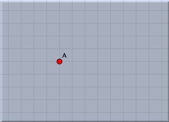 |
| 図 1: 点を一つとる |
CindyScript で、このように作った図に幾何要素を付け加えることができます。いま、この点Aからx軸方向に1,y軸方向に1移動した点ををとります。そのために、「スクリプト」メニューから CindyScriptを選んでスクリプトエディタを開きます。次のようなウィンドウが出ます。これが、 CindyScriptのエディタ画面です。
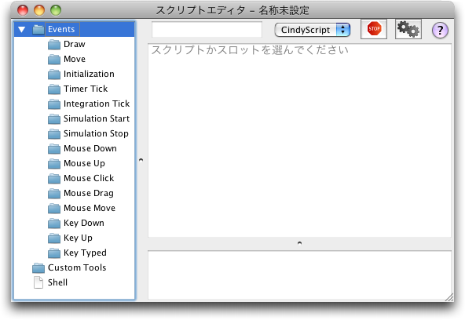 |
| 図 2: スクリプトエディタ |
このウィンドウの左側にいくつかのイベントがあるでしょう。 CindyScript のそれぞれのスクリプトはこれらのイベントと関連して実行されます。これらを「スロット」と呼んでいます。では、 draw スロットにスクリプトを書きましょう。これは、このスクリプトが、画面の描画の前に実行されることを意味しています。図形を描くスクリプトを書くのに適したスロットです。ここにスクリプトを書くためにスロットのアイコンをクリックします。 (図 3).
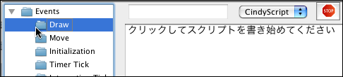 |
| 図 3: draw スロットを選ぶ |
次に、エディタのメインウィンドウにスクリプトを書きます。点を描くために図４のようにスクリプトを書きます。文字の色は自動的につきます。
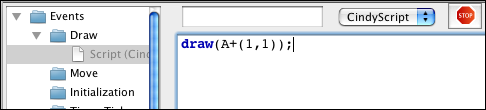 |
| 図 4: CindyScript 最初の一行 |
このコードについて簡単に説明します。
draw(...) 関数は位置を表す２次元ベクトルを受け取ります。（このようなものを引数（ひきすう）といいます）そして、描画面の指定した位置に点を打ちます。初期設定では、小さな緑色の点です。 ( draw 関数は２つのベクトルを引数として受け取ることもできます。その場合は２点を結ぶ線分を描きます）このスクリプトでは、引数を A+(1,1) としています。これは、点Aのxy座標にベクトル(1,1) を加えるという意味です。計算式の中で幾何要素が自動的にその座標の役割をするわけです。コードを書き込んだならば、スクリプトのスタートボタン（二つの歯車のアイコン）を押します。すると、図５のように点が打たれます。
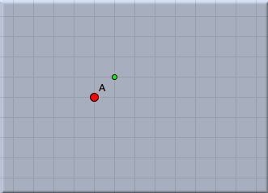 |
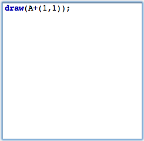 |
| 図 5: 点をとる |
繰り返し
さて、簡単な制御機構をこのスクリプトに加えます。一つの点の代わりに点の列を描きます。そのために
repeat(...) 関数を用いて繰り返しを行ないます。 repeat(...) 関数には３つの引数を渡します。１つ目は繰り返しの回数です。２番目は実行変数の名前、３番目は、繰り返したいコードです。引数はコンマで区切ります。図６をごらんください。 (スクリプトを変更したならば実行ボタンを押して実行することを忘れないでください。)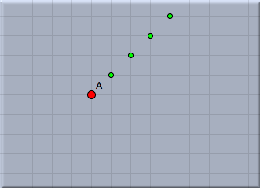 |
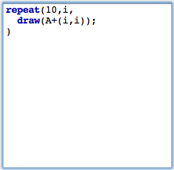 |
| 図 6: 繰り返して点を打つ |
このスクリプトは 10 個の点を打ちます。変数
i が実行変数です。繰り返しの間、 1,2,3,4,5,6,7,8,9,10 の値をとっていきます。そして、その都度 A+(i,i) を計算し、結果として点列を描きます。次のステップでは点 A の周りに円状に点を描きます。点 A からの距離は１とし、10°ずつ点を打っていきます。そのために、角度を表す新しい変数
w を用意します。まず w=i*10° という行を追加します。これで変数 w が自動的に作られ、(変数の型を示す必要はありません) 角度を表すことになります。次に、 (sin(w),cos(w)) という行を追加します。図7のようになります。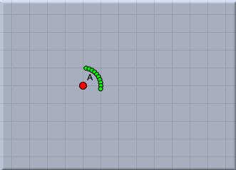 |
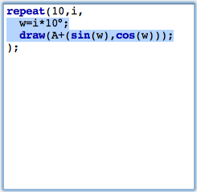 |
| 図 7: 円状に点を打つ |
スライダを追加する
次に、描画面上にスライダを作り、点の数をインタラクティブに増減できるようにします。スライダは幾何要素で作ります。線分を一つ引き、その上に点を一つとります。他の形のスライダ（たとえば円形のスライダ）も可能です。 線分を加える
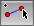
モードにして線分を一つ追加します。その端点は B と C になるでしょう。次に、点を加える モードにして線分上に点を一つとります。この点は D になるでしょう。そこで、C と D の距離を点の数をコントロールするために利用します。この距離は|C,D| で測定できます。これに 10 を掛けて四捨五入し、描画する点の数 n とします。これは、 n=round(|C,D|*10) の１行だけでできます。ここでも変数の型を指定する必要がないことに注意してください。 n のような変数は単なる容器のようなものです。次に、繰り返しの数を 10 から n に変えます。ここまでの図とスクリプトを図8に示します。この図で、描かれる点の数は、点B を動かすことによりインタラクティブにコントロールできます。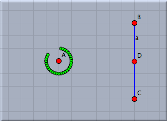 |
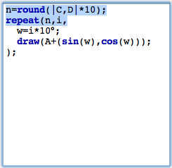 |
| 図 8: スライダを追加する |
奇妙な角にする
今から行なうことは一見するとあまり意味がないように思えることでしょう。変化させる角を10°から 137,508°にします。その結果は図９に示した通りです。
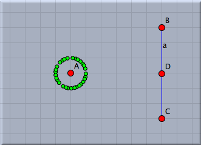 |
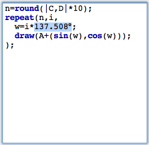 |
| 図 9: "奇妙な" 角 |
それぞれの点はほとんどランダムに置かれたように見えます。実は 137,508° という角が数学的に特別な意味を持っているのです。それは、 360° に対する黄金比の２乗なのです。それは、点の配置について不思議な性質を持ちます。それぞれの新しい点は、その前の点からできるだけ遠く離れるように置かれます。このことを、中心Aからの距離を変えることのよって見ることができます。放射状に点を置くのに、 sqrt(i)*0.2 とするとちょうど具合がよくなります。そのために、変数
r にこの値をセットします。その結果が図10です。それぞれの点が、その周りに自由空間を持つように配置されたことに注意して見てください。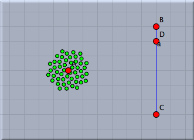 |
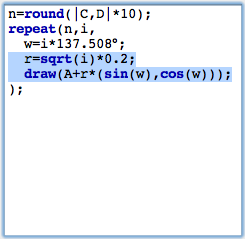 |
| 図10: 半径を調整 |
点の数をずっと多くしましょう。１行目の 10 という数を 80 にします。視覚的な変化の速度を見るために、点D を動かして見ましょう。図11ではおよそ400個の点が描かれています。
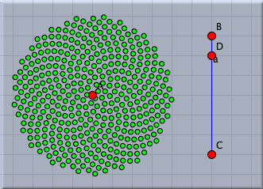 |
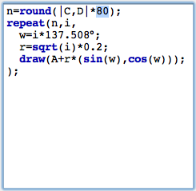 |
| 図 11: たくさんの点 |
ひまわりにおける螺旋
先ほど描いた点は、ひまわりの種のようにおおざっぱに置かれています。ひまわりに見られる典型的な螺旋構造も観察できます。137,508°という角変位の要素がこのパターンでは重要です。 それは角度を少し動かして、何が起きているか見ることで理由が分かるでしょう。そのために、角変位を変化させるスライダーをもう一つ追加します。再び線分を描き、その上に点をとり、わずかな値変化を
dd=|E,G|*0.1° で定義します。角を決める式を w=i*(137.508+dd) として、この値を式の中に追加します。このような小さなゆらぎの効果を図12に見ることができます。 ほんの少し角変位を変えるだけで、きれいな螺旋構造が現れることがわかります。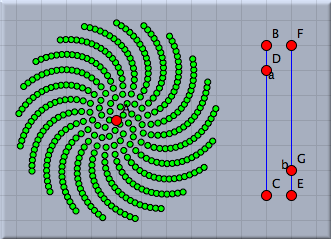 |
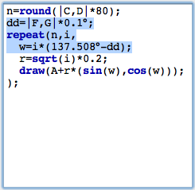 |
| 図 12: 角度のゆらぎ |
螺旋の数は黄金比とその比が続いていくことに密接に関係しています。 私たちは、この(とても奥深い)数学的な構造を詳しく述べることはしません。ここでは、フィボナッチ数列 (1,1,2,3,5,8,13,21,34,...) と呼ばれるものが役割を果たしていると言うにとどめておきます。フィボナッチ数列のそれぞれの数字は直前の二つの数の和です。２つの連続した数の比をとると、あとのほうの２つの数を取るほどより黄金比に近い数になります。驚くべきことに現れる螺旋の数はフィボナッチ数になっています。(実際のひまわりで確かめてみてください！)
画面上の点の色を変えることによってこれを証明してみましょう。多くの CindyScript の関数(特にdraw(...)関数)では、修飾子と呼ばれるものを使うことができます。それらを使うことで、例えば、描かれている要素の色、大きさ、透明度を変えることができます。この例では、draw関数に「color->hue(i/21)」を追加します。hue(...)関数はすべての色相帯を持つ虹色を作り出してくれます。引数（hue関数の括弧のなかに書く数） が(0,0)から(1,0)まで動く間に、色相環のすべての色が表現されます。色を「hue(i/21)」と設定することで21 (フィボナッチ数) を１周期としていろいろな色の種を描くことができます。角度のゆらぎによるパターンを21色の螺旋として視覚的に観察することができます。
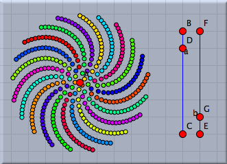 |
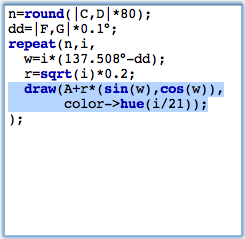 |
| 図 13: 螺旋の色分け |
＜伊藤＞
Page last modified on Wednesday 03 of August, 2011 [00:13:49 UTC].
The original document is available at
http://doc.cinderella.de/tiki-index.php?page=Scripting%20the%20Seeds%20of%20a%20SunflowerJ